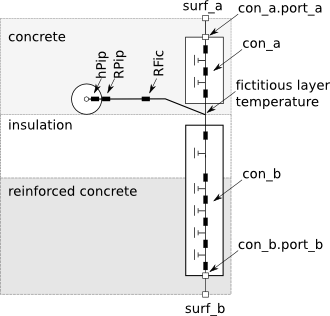
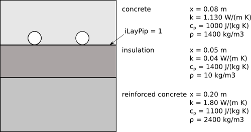

Package with radiant slab models
This package contains models for radiant slabs with pipes or a capillary heat exchanger embedded in the construction.
Extends from Modelica.Icons.VariantsPackage (Icon for package containing variants).
| Name | Description |
|---|---|
| Model of a single circuit of a radiant slab | |
| Model of multiple parallel circuits of a radiant slab | |
| Collection of models that illustrate model use and test models | |
| Package with base classes for Buildings.Fluid.HeatExchangers.RadiantSlabs |
 Buildings.Fluid.HeatExchangers.RadiantSlabs.SingleCircuitSlab
Buildings.Fluid.HeatExchangers.RadiantSlabs.SingleCircuitSlab
Model of a single circuit of a radiant slab

This is a model of a single flow circuit of a radiant slab with pipes or a capillary heat exchanger embedded in the construction. For a model with multiple parallel flow circuits, see Buildings.Fluid.HeatExchangers.RadiantSlabs.ParallelCircuitsSlab.
The figure below shows the thermal resistance network of the model for an example in which the pipes are embedded in the concrete slab, and the layers below the pipes are insulation and reinforced concrete.

The construction con_a computes transient heat conduction
between the surface heat port surf_a and the
plane that contains the pipes, with the heat port con_a.port_a connecting to surf_a.
Similarly, the construction con_b is between the plane
that contains the pipes and the surface heat port
sur_b, with the heat port con_b.port_b connecting to surf_b.
The temperature of the plane that contains the pipes is computes using a fictitious
resistance RFic, which is computed by
Buildings.Fluid.HeatExchangers.RadiantSlabs.BaseClasses.Functions.AverageResistance.
There is also a resistance for the pipe wall RPip
and a convective heat transfer coefficient between the fluid and the pipe inside wall.
The convective heat transfer coefficient is a function of the mass flow rate and is computed
by
Buildings.Fluid.HeatExchangers.RadiantSlabs.BaseClasses.InternalFlowConvection.
This resistance network is instantiated several times along the flow path. The parameter
nSeg determines how many instances are used. However, all instances
connect to the same surface temperature heat ports surf_a and surf_b.
The material layers are declared by the parameter layers, which is an instance of
Buildings.HeatTransfer.Data.OpaqueConstructions.
The first layer of this material is the one at the heat port surf_a, and the last layer
is at the heat port surf_b.
The parameter iLayPip must be set to the number of the interface in which the pipes
are located. For example, consider the following floor slab.

Then, the construction definition is
Buildings.HeatTransfer.Data.OpaqueConstructions.Generic layers(
nLay=3,
material={
Buildings.HeatTransfer.Data.Solids.Generic(
x=0.08,
k=1.13,
c=1000,
d=1400,
nSta=5),
Buildings.HeatTransfer.Data.Solids.Generic(
x=0.05,
k=0.04,
c=1400,
d=10),
Buildings.HeatTransfer.Data.Solids.Generic(
x=0.2,
k=1.8,
c=1100,
d=2400)}) "Material definition for floor construction";
Note that we set nSta=5 in the first material layer. In this example,
this material layer is the concrete layer in which the pipes are embedded. By setting
nSta=5 the simulation is forced to be done with five state variables in this layer.
The default setting would have led to only one state variable in this layer.
Since the pipes are at the interface of the concrete and the insulation,
we set iLayPip=1.
The initialization of the fluid in the pipes and of the slab temperature are independent of each other.
To initialize the medium, the same mechanism is used as for any other fluid
volume, such as
Buildings.Fluid.MixingVolumes.MixingVolume. Specifically,
the parameters
energyDynamics and massDynamics on the
Dynamics tab are used.
Depending on the values of these parameters, the medium is initialized using the values
p_start,
T_start,
X_start and
C_start, provided that the medium model contains
species concentrations X and trace substances C.
To initialize the construction temperatures, the parameters
steadyStateInitial,
T_a_start,
T_b_start and
T_c_start are used.
By default, T_c_start is set to the temperature that leads to steady-state
heat transfer between the surfaces surf_a and surf_b, whose
temperatures are both set to
T_a_start and
T_b_start.
The parameter pipe, which is an instance of the record
Buildings.Fluid.Data.Pipes,
defines the pipe material and geometry.
The parameter disPip declares the spacing between the pipes and
the parameter length, with default length=A/disPip
where A is the slab surface area,
declares the whole length of the pipe circuit.
The parameter sysTyp is used to select the equation that is used to compute
the average temperature in the plane of the pipes.
It needs to be set to the following values:
| sysTyp | System type |
|---|---|
| BaseClasses.Types.SystemType.Floor | Radiant heating or cooling systems with pipes embedded in the concrete slab above the thermal insulation. |
| BaseClasses.Types.SystemType.Ceiling_Wall_or_Capillary | Radiant heating or cooling systems with pipes embedded in the concrete slab in the ceiling, or radiant wall systems. Radiant heating and cooling systems with capillary heat exchanger at the construction surface. |
The analogy with a three-resistance network and the corresponding equation for
Rx is based on a steady-state heat transfer analysis. Therefore, it is
only valid during steady-state.
For a fully dynamic model, a three-dimensional finite element method for the radiant slab would need to be implemented.
To separate the material declaration layers into layers between the pipes
and heat port surf_a, and between the pipes and surf_b, the
vector layers.material[nLay] is partitioned into
layers.material[1:iLayPip] and layers.material[iLayPip+1:nLay].
The respective partitions are then assigned to the models for heat conduction between the
plane with the pipes and the construction surfaces, con_a and con_b.
Extends from Buildings.Fluid.HeatExchangers.RadiantSlabs.BaseClasses.Slab (Base class for radiant slab), Buildings.Fluid.FixedResistances.BaseClasses.Pipe (Model of a pipe with finite volume discretization along the flow path).
| Type | Name | Default | Description |
|---|---|---|---|
| SystemType | sysTyp | Radiant system type | |
| Distance | disPip | Pipe distance [m] | |
| Generic | pipe | Record for pipe geometry and material | |
| replaceable package Medium | PartialMedium | Medium in the component | |
| Integer | nSeg | 10 | Number of volume segments |
| Length | thicknessIns | 0 | Thickness of insulation [m] |
| ThermalConductivity | lambdaIns | 0.04 | Heat conductivity of insulation [W/(m.K)] |
| Length | diameter | pipe.dIn | Pipe diameter (without insulation) [m] |
| Length | length | A/disPip | Length of the pipe [m] |
| Construction | |||
| Generic | layers | Definition of the construction, which must have at least two material layers | |
| Integer | iLayPip | Number of the interface layer in which the pipes are located | |
| Area | A | Surface area of radiant slab [m2] | |
| Nominal condition | |||
| MassFlowRate | m_flow_nominal | Nominal mass flow rate [kg/s] | |
| Pressure | dp_nominal | Modelica.Fluid.Pipes.BaseCla... | Pressure [Pa] |
| Initialization | |||
| MassFlowRate | m_flow.start | 0 | Mass flow rate from port_a to port_b (m_flow > 0 is design flow direction) [kg/s] |
| Pressure | dp.start | 0 | Pressure difference between port_a and port_b [Pa] |
| Initialization | |||
| Construction | |||
| Boolean | steadyStateInitial | false | =true initializes dT(0)/dt=0, false initializes T(0) at fixed temperature using T_a_start, T_c_start and T_b_start |
| Temperature | T_a_start | 293.15 | Initial temperature at surf_a, used if steadyStateInitial = false [K] |
| Temperature | T_b_start | 293.15 | Initial temperature at surf_b, used if steadyStateInitial = false [K] |
| Temperature | T_c_start | (T_a_start*con_b[1].layers.R... | Initial construction temperature in the layer that contains the pipes, used if steadyStateInitial = false [K] |
| AbsolutePressure | p_start | Medium.p_default | Start value of pressure [Pa] |
| Temperature | T_start | Medium.T_default | Start value of temperature [K] |
| MassFraction | X_start[Medium.nX] | Medium.X_default | Start value of mass fractions m_i/m [kg/kg] |
| ExtraProperty | C_start[Medium.nC] | fill(0, Medium.nC) | Start value of trace substances |
| ExtraProperty | C_nominal[Medium.nC] | fill(1E-2, Medium.nC) | Nominal value of trace substances. (Set to typical order of magnitude.) |
| Dynamics | |||
| Equations | |||
| Dynamics | energyDynamics | Modelica.Fluid.Types.Dynamic... | Formulation of energy balance |
| Dynamics | massDynamics | energyDynamics | Formulation of mass balance |
| Assumptions | |||
| Boolean | allowFlowReversal | system.allowFlowReversal | = true to allow flow reversal, false restricts to design direction (port_a -> port_b) |
| Advanced | |||
| MassFlowRate | m_flow_small | 1E-4*abs(m_flow_nominal) | Small mass flow rate for regularization of zero flow [kg/s] |
| Boolean | homotopyInitialization | true | = true, use homotopy method |
| Flow resistance | |||
| Boolean | from_dp | false | = true, use m_flow = f(dp) else dp = f(m_flow) |
| Boolean | linearizeFlowResistance | false | = true, use linear relation between m_flow and dp for any flow rate |
| Real | deltaM | 0.1 | Fraction of nominal flow rate where flow transitions to laminar |
| Real | ReC | 4000 | Reynolds number where transition to turbulent starts |
| Type | Name | Description |
|---|---|---|
| HeatPort_a | surf_a | Heat port at construction surface |
| HeatPort_a | surf_b | Heat port at construction surface |
| FluidPort_a | port_a | Fluid connector a (positive design flow direction is from port_a to port_b) |
| FluidPort_b | port_b | Fluid connector b (positive design flow direction is from port_a to port_b) |
 Buildings.Fluid.HeatExchangers.RadiantSlabs.ParallelCircuitsSlab
Buildings.Fluid.HeatExchangers.RadiantSlabs.ParallelCircuitsSlab
Model of multiple parallel circuits of a radiant slab

This is a model of a radiant slab with pipes or a capillary heat exchanger embedded in the construction. The model is a composition of multiple models of Buildings.Fluid.HeatExchangers.RadiantSlabs.SingleCircuitSlab that are arranged in a parallel.
The parameter nCir declares the number of parallel flow circuits.
Each circuit will have the same mass flow rate, and it is exposed to the same
port variables for the heat port at the two surfaces, and for the flow inlet and outlet.
A typical model application is as follows: Suppose a large room has a radiant slab with two parallel circuits with the same pipe spacing and pipe length. Then, rather than using two instances of Buildings.Fluid.HeatExchangers.RadiantSlabs.SingleCircuitSlab, this system can be modeled using one instance of this model in order to reduce computing effort. See Buildings.Fluid.HeatExchangers.RadiantSlabs.Examples.SingleCircuitMultipleCircuit for an example that shows that the models give identical results.
Since this model is a parallel arrangment of nCir models of
Buildings.Fluid.HeatExchangers.RadiantSlabs.SingleCircuitSlab,
we refer to
Buildings.Fluid.HeatExchangers.RadiantSlabs.SingleCircuitSlab
for the model documentation.
To allow a better comment for the nominal mass flow rate, i.e., to specify that its value is for all circuits combined, this model does not inherit Buildings.Fluid.Interfaces.PartialTwoPortInterface.
Extends from Modelica.Fluid.Interfaces.PartialTwoPort (Partial component with two ports), Buildings.Fluid.HeatExchangers.RadiantSlabs.BaseClasses.Slab (Base class for radiant slab), Buildings.Fluid.Interfaces.LumpedVolumeDeclarations (Declarations for lumped volumes), Buildings.Fluid.Interfaces.TwoPortFlowResistanceParameters (Parameters for flow resistance for models with two ports).
| Type | Name | Default | Description |
|---|---|---|---|
| replaceable package Medium | PartialMedium | Medium in the component | |
| SystemType | sysTyp | Radiant system type | |
| Distance | disPip | Pipe distance [m] | |
| Generic | pipe | Record for pipe geometry and material | |
| Integer | nCir | 1 | Number of parallel circuits |
| Integer | nSeg | 10 | Number of volume segments in each circuit (along flow path) |
| Length | length | A/disPip/nCir | Length of the pipe of a single circuit [m] |
| Construction | |||
| Generic | layers | Definition of the construction, which must have at least two material layers | |
| Integer | iLayPip | Number of the interface layer in which the pipes are located | |
| Area | A | Surface area of radiant slab (all circuits combined) [m2] | |
| Nominal condition | |||
| Pressure | dp_nominal | Modelica.Fluid.Pipes.BaseCla... | Pressure [Pa] |
| MassFlowRate | m_flow_nominal | Nominal mass flow rate of all circuits combined [kg/s] | |
| Assumptions | |||
| Boolean | allowFlowReversal | system.allowFlowReversal | = true to allow flow reversal, false restricts to design direction (port_a -> port_b) |
| Initialization | |||
| Construction | |||
| Boolean | steadyStateInitial | false | =true initializes dT(0)/dt=0, false initializes T(0) at fixed temperature using T_a_start, T_c_start and T_b_start |
| Temperature | T_a_start | 293.15 | Initial temperature at surf_a, used if steadyStateInitial = false [K] |
| Temperature | T_b_start | 293.15 | Initial temperature at surf_b, used if steadyStateInitial = false [K] |
| AbsolutePressure | p_start | Medium.p_default | Start value of pressure [Pa] |
| Temperature | T_start | Medium.T_default | Start value of temperature [K] |
| MassFraction | X_start[Medium.nX] | Medium.X_default | Start value of mass fractions m_i/m [kg/kg] |
| ExtraProperty | C_start[Medium.nC] | fill(0, Medium.nC) | Start value of trace substances |
| ExtraProperty | C_nominal[Medium.nC] | fill(1E-2, Medium.nC) | Nominal value of trace substances. (Set to typical order of magnitude.) |
| Dynamics | |||
| Equations | |||
| Dynamics | energyDynamics | Modelica.Fluid.Types.Dynamic... | Formulation of energy balance |
| Dynamics | massDynamics | energyDynamics | Formulation of mass balance |
| Flow resistance | |||
| Boolean | computeFlowResistance | true | =true, compute flow resistance. Set to false to assume no friction |
| Boolean | from_dp | false | = true, use m_flow = f(dp) else dp = f(m_flow) |
| Boolean | linearizeFlowResistance | false | = true, use linear relation between m_flow and dp for any flow rate |
| Real | deltaM | 0.1 | Fraction of nominal flow rate where flow transitions to laminar |
| Advanced | |||
| MassFlowRate | m_flow_small | 1E-4*abs(m_flow_nominal) | Small mass flow rate of all circuits combined for regularization of zero flow [kg/s] |
| Boolean | homotopyInitialization | true | = true, use homotopy method |
| Diagnostics | |||
| Boolean | show_T | false | = true, if actual temperature at port is computed |
| Type | Name | Description |
|---|---|---|
| HeatPort_a | surf_a | Heat port at construction surface |
| HeatPort_a | surf_b | Heat port at construction surface |